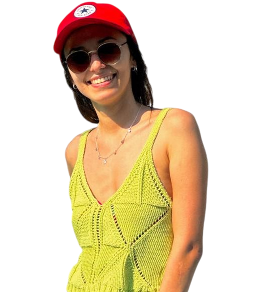
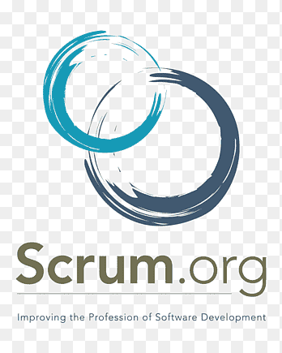

Sobre mí
Me gusta mezclar lo técnico con lo visual. Disfruto especialmente la parte del frontend donde puedo aplicar mi gusto por lo estético y lo funcional. Uso Canva para darle claridad y atractivo a las ideas, y me manejo bien en equipos con metodologías ágiles como Scrum, aunque me adapto fácilmente a diferentes métodos y entornos de trabajo. Me parece ideal analizar problemas con pensamiento crítico, colaborar en equipo y encontrar soluciones creativas. En mis proyectos, GitHub y Visual Studio Code son herramientas clave. Siempre busco crear experiencias que sean intuitivas y atractivas.

Mis Habilidades

Canva
Diseño visual de ideas y presentaciones.

HTML
Marcado semántico de páginas web.

CSS
Estilización y maquetación visual.

Bootstrap
Componentes responsive y diseño rápido.

Python
Lógica de programación y scripts.

MySQL
Gestión de bases de datos relacionales.

VS Code
Editor multiplataforma para desarrollo.

Scrum
Metodología ágil de trabajo en equipo.
Trello
Organización de tareas colaborativas.

Draw.io
Diagramas y relevamientos visuales.